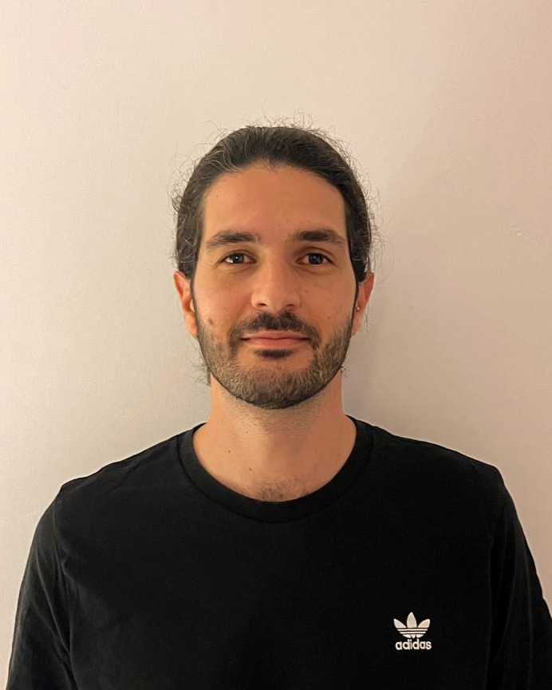

Amit Malka
Data professional combining strong analytical capabilities with modern web development skills.
Experienced in transforming complex data into actionable insights through end-to-end solutions.

Data professional combining strong analytical capabilities with modern web development skills.
Experienced in transforming complex data into actionable insights through end-to-end solutions.
I am Amit Malka, a graduate of Tel-Hai Academic College with a BSc in Biotechnology-Biodata. Throughout my academic journey, I specialized in complex biological data analysis, with a particular focus on single-cell RNA sequencing.
At MyHeritage's COVID-19 laboratory, I led a team of technicians and managed RNA extraction processes. This role strengthened my leadership capabilities, problem-solving skills, and commitment to excellence.
My flagship project at the MIGAL Research Institute involved developing a comprehensive R-based pipeline for single-cell RNA sequencing analysis. The project encompassed in-depth gene expression analysis in the context of hypertension, showcasing my ability to handle complex biological datasets.
My technical expertise includes:
Data Analysis & Machine Learning:
Web Development:
Professional Strengths:
I combine analytical expertise with software development skills to create comprehensive data solutions. My background in biotechnology adds unique perspective to problem-solving, while my technical skills enable me to build efficient, scalable applications.
I'm particularly interested in roles that combine data analysis with modern web development, where I can leverage my full stack of skills to create impactful solutions.
Explore my portfolio showcasing advanced data analysis projects that demonstrate my expertise in transforming complex biological data into meaningful insights.
As a pioneer at the MIGAL Research Institute, I developed a comprehensive computational pipeline for single-cell RNA sequencing analysis. This groundbreaking project established a foundation for future researchers in the field.
The project focused on analyzing extensive gene expression datasets from three distinct rat models, investigating the effects of EPA lactone on hypertension. My work encompassed:
• Rigorous data quality control and preprocessing
• Advanced dimensionality reduction techniques
• Sophisticated cell clustering and identification
• Complex statistical analysis of treatment effects
• Development of intuitive data visualizations
The complete project documentation and code are available on my GitHub repository.